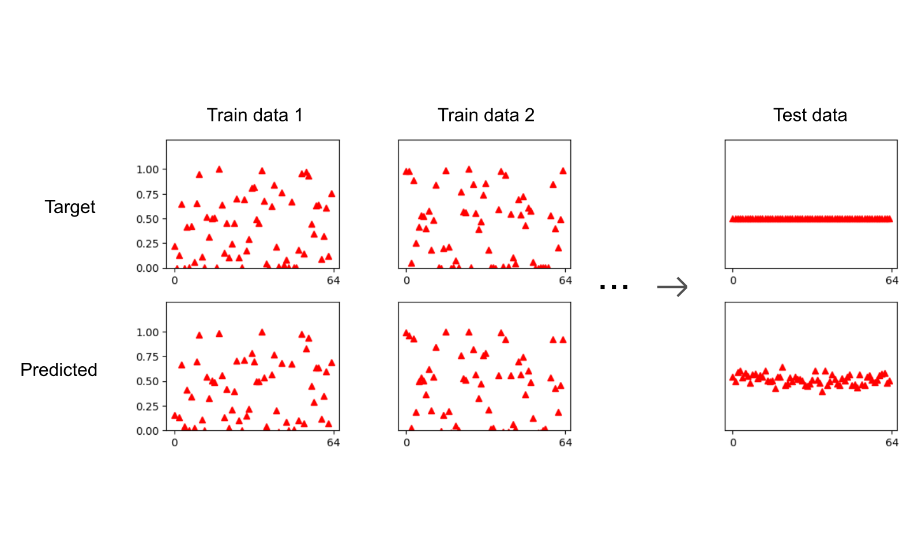

Synthesizer parameter estimation은 신디사이저의 파라미터 조작을 통하여 기존의 소리와
최대한 가까운 소리를 만들어내려는 시도이다.
지금까지는 Subtractive, FM 신디사이저에서의 파라미터 조작을 통한 소리 구현으로만 연구가
이루어졌으나, 이 연구에서 제안하는 것은 Wavetable 신디사이저에서의 파라미터 조작이다.
Wavetable 신디사이저는 Subtractive 신디사이저의 기본적인 파라미터(대표적으로 Envelope,
Filter cutoff, resonance)에 더하여, 기존의 사각파, 톱니파 등의 파형 대신 임의 파형을
지정할 수 있는 것으로, 광범위한 영역의 소리를 만들 수 있어 널리 쓰이는 소리 제작 기구이다.
이 연구에서는 오픈소스 Wavetable 신디사이저인 Vital이 포함하는 Subtractive 신디사이저
파라미터 수치 예측에 더하여 임의 파형의 형태를 그 파형을 구성하는 배음들의 크기로부터
예측하는 딥러닝 기반 모델을 만들었다.
이 모델을 통해 예측된 각 배음의 크기들을 대응하는 주파수의 사인파의 진폭으로 설정하고 가산 합성하여 파형을 만든 후에 신디사이저 파라미터를 걸어 소리가 만들어진다.
64개의 크기가 0~1 사이 랜덤으로 지정된 배음들과 14개의 신디사이저 파라미터로 생성된 소리가 훈련 데이터로 사용되었으며, 따라서 모든 배음들의 크기가 0.5인 소리와 같은 특수한 경우에도 올바른 예측이 가능하며, 테스트할 소리의 전체 음량은 훈련된 음량 범위 내에 들어가도록 조절된다.
테스트 모델에서 선택된 14개의 신디사이저 파라미터는 Oscillator unison voices, unison detune, phase randomization, Amp Envelope ADSR, Filter Envelope attack, hold, decay, Filter cutoff, resonance, drive이다.
| Sounds from DX7(FM Synthesizer) | ||
|---|---|---|
| Target | Predicted | |
| Strings | ||
| Piano | ||
| Clav | ||
| Brass | ||
Yee-King et al., 2018. Automatic Programming of VST Sound Synthesizers using Deep Networks and Other Techniques
[link]
Mitcheltree et al., 2021. SerumRNN: Step by Step Audio VST Effect Programming
[link]
Vaillant et al., 2021. Improving Synthesizer Programming From Variational Autoencoders Latent Space
[link]
Masuda et al., 2021. Synthesizer Sound Matching with Differentiable DSP
[link]
Chen et al., 2022. Sound2Synth: Interpreting Sound via FM Synthesizer Parameters Estimation
[link]